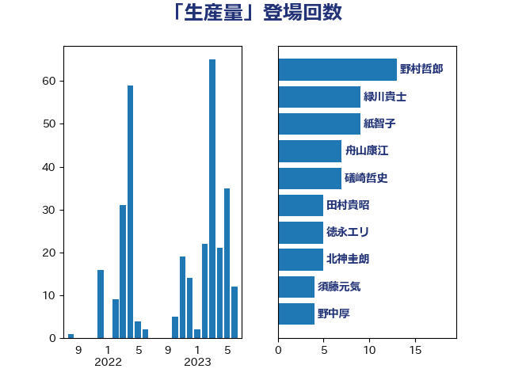

単語「生産量」

| 野村哲郎 | 自由民主党 | 13 回 |
| 緑川貴士 | 立憲民主党 | 9 回 |
| 紙智子 | 日本共産党 | 9 回 |
| 舟山康江 | 国民民主党 | 7 回 |
| 礒崎哲史 | 国民民主党 | 7 回 |
| 田村貴昭 | 日本共産党 | 5 回 |
| 徳永エリ | 立憲民主党 | 5 回 |
| 北神圭朗 | 無所属 | 5 回 |
| 須藤元気 | 無所属 | 4 回 |
| 野中厚 | 自由民主党 | 4 回 |
| 空本誠喜 | 日本維新の会 | 4 回 |
| 阿達雅志 | 自由民主党 | 3 回 |
| 道下大樹 | 立憲民主党 | 3 回 |
| 篠原孝 | 立憲民主党 | 3 回 |
| 石川香織 | 立憲民主党 | 3 回 |
| 渡辺創 | 立憲民主党 | 3 回 |
| 下野六太 | 公明党 | 3 回 |
| 金城泰邦 | 公明党 | 2 回 |
| 遠藤良太 | 日本維新の会 | 2 回 |
| 近藤和也 | 立憲民主党 | 2 回 |
| 角田秀穂 | 公明党 | 2 回 |
| 西野太亮 | 自由民主党 | 2 回 |
| 藤木眞也 | 自由民主党 | 2 回 |
| 萩生田光一 | 自由民主党 | 2 回 |
| 稲津久 | 公明党 | 2 回 |
| 石垣のりこ | 立憲民主党 | 2 回 |
| 河西宏一 | 公明党 | 2 回 |
| 梅谷守 | 立憲民主党 | 2 回 |
| 柿沢未途 | 無所属 | 2 回 |
| 広瀬めぐみ | 自由民主党 | 2 回 |
| 岸田文雄 | 自由民主党 | 2 回 |
| 山田勝彦 | 立憲民主党 | 2 回 |
| 山岡達丸 | 立憲民主党 | 2 回 |
| 山下芳生 | 日本共産党 | 2 回 |
| 宮口治子 | 立憲民主党 | 2 回 |
| 大島敦 | 立憲民主党 | 2 回 |
| 大串博志 | 立憲民主党 | 2 回 |
| 和田有一朗 | 日本維新の会 | 2 回 |
| 加藤明良 | 自由民主党 | 2 回 |
| 串田誠一 | 日本維新の会 | 2 回 |
| 中村裕之 | 自由民主党 | 2 回 |
| 中川郁子 | 自由民主党 | 2 回 |
| 長友慎治 | 国民民主党 | 1 回 |
| 西村康稔 | 自由民主党 | 1 回 |
| 藤巻健太 | 日本維新の会 | 1 回 |
| 舞立昇治 | 自由民主党 | 1 回 |
| 細田健一 | 自由民主党 | 1 回 |
| 福岡資麿 | 自由民主党 | 1 回 |
| 神谷宗幣 | 参政党 | 1 回 |
| 神津たけし | 立憲民主党 | 1 回 |
| 畦元将吾 | 自由民主党 | 1 回 |
| 田村まみ | 国民民主党 | 1 回 |
| 猪瀬直樹 | 日本維新の会 | 1 回 |
| 浜田靖一 | 自由民主党 | 1 回 |
| 沢田良 | 日本維新の会 | 1 回 |
| 池畑浩太朗 | 日本維新の会 | 1 回 |
| 江藤拓 | 自由民主党 | 1 回 |
| 武部新 | 自由民主党 | 1 回 |
| 横沢高徳 | 立憲民主党 | 1 回 |
| 森屋隆 | 立憲民主党 | 1 回 |
| 梅村みずほ | 日本維新の会 | 1 回 |
| 林芳正 | 自由民主党 | 1 回 |
| 杉本和巳 | 日本維新の会 | 1 回 |
| 星北斗 | 自由民主党 | 1 回 |
| 日下正喜 | 公明党 | 1 回 |
| 斉藤鉄夫 | 公明党 | 1 回 |
| 川田龍平 | 立憲民主党 | 1 回 |
| 山本左近 | 自由民主党 | 1 回 |
| 山本剛正 | 日本維新の会 | 1 回 |
| 尾崎正直 | 自由民主党 | 1 回 |
| 小野田紀美 | 自由民主党 | 1 回 |
| 小沼巧 | 立憲民主党 | 1 回 |
| 寺田静 | 無所属 | 1 回 |
| 宗清皇一 | 自由民主党 | 1 回 |
| 大椿ゆうこ | 立憲民主党 | 1 回 |
| 堤かなめ | 立憲民主党 | 1 回 |
| 坂本哲志 | 自由民主党 | 1 回 |
| 土田慎 | 自由民主党 | 1 回 |
| 古川元久 | 国民民主党 | 1 回 |
| 古屋範子 | 公明党 | 1 回 |
| 勝俣孝明 | 自由民主党 | 1 回 |
| 加藤勝信 | 自由民主党 | 1 回 |
| 住吉寛紀 | 日本維新の会 | 1 回 |
| 今枝宗一郎 | 自由民主党 | 1 回 |
| 仁木博文 | 無所属 | 1 回 |
| 丸川珠代 | 自由民主党 | 1 回 |